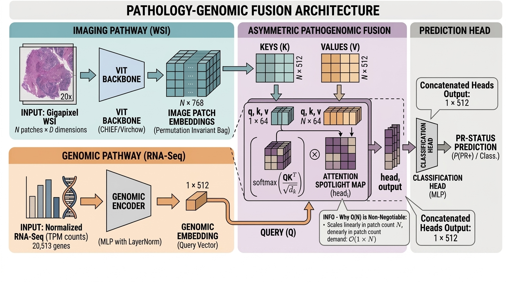

Dataset: TCGA-BRCA · N = 951 patients · 638 PR+ / 313 PR− Stack: PyTorch · MONAI · CHIEF ViT-B · Scikit-learn
1 The Challenge
1.1 Clinical Necessity
PR status determines whether a breast cancer patient is a candidate for endocrine therapies such as tamoxifen and aromatase inhibitors. A misclassification in either direction carries direct clinical cost: false positives expose patients to ineffective hormonal therapy, while false negatives withhold potentially curative treatment. The current gold standard — IHC staining of biopsy tissue — is subject to meaningful inter-pathologist disagreement, particularly in borderline cases near the positivity threshold. Computational adjudication using high-dimensional transcriptomic and morphological data offers a path to more consistent, evidence-driven classification.
1.2 The Structural Incompatibility Problem
The core engineering challenge is not modelling capacity — it is data structure. A transcriptomic profile is a fixed-length vector of 20,513 RNA-Seq RSEM features in which every patient occupies an identical coordinate space. A digitised whole-slide image, tiled at 20×, yields a variable-length, unordered bag of patch embeddings whose cardinality N ranges from 960 to 39,052 depending on tissue area and scanner footprint. Because tiles are extracted by raster scan, patch order encodes scanner trajectory rather than tissue organisation. Standard fusion architectures — which either reduce the patch bag to a fixed summary or impose positional encodings — discard spatial specificity or introduce scanner-dependent inductive biases that do not generalise across acquisition platforms.
1.3 The Slide-Size Confounder
A subtler problem emerged during interpretability analysis. The intuitive metric for quantifying attentional focus — Shannon entropy — is mathematically bounded above by \log N. A patient with 960 patches has a theoretical maximum entropy of \approx 6.87 nats; one with 39,052 patches has a maximum of \approx 10.57 nats. Two patients with structurally identical attention distributions will therefore differ in measured entropy by up to 3.7 nats purely as a function of slide size, producing a confounded metric rather than a biological signal.
Any interpretability metric not explicitly normalised for input size, applied to a cohort where slide size varies non-randomly across outcome classes, risks measuring the size covariate rather than the biological signal. Shannon entropy fails this test for variable-length attention distributions.
2 The Solution
2.1 Asymmetric Cross-Attention Architecture
The architectural resolution is to treat the genomic embedding as a single query token and the entire patch bag as the key-value evidence being searched. The 20,513-dimensional RNA-Seq vector is projected to 512 dimensions through a linear bottleneck with LayerNorm and GELU, producing Q \in \mathbb{R}^{1 \times 512}. The N patch embeddings from the CHIEF ViT-B encoder are projected to keys K \in \mathbb{R}^{N \times 512} and values V \in \mathbb{R}^{N \times 512} through independent learnable matrices, with no positional encoding — preserving the permutation invariance the unordered patch bag demands. The overall architecture is illustrated in Figure 1.

The attention computation across 8 heads (d_k = 64) is:
\text{Attention}(Q, K, V) = \text{softmax}\!\left(\frac{QK^\top}{\sqrt{d_k}}\right) V
Because Q has shape (1 \times 512) and K has shape (N \times 512), the attention score matrix has shape (1 \times N) — O(N) rather than the O(N^2) of symmetric self-attention. At N = 39{,}052 patches, symmetric self-attention would require approximately 1.53 billion pairwise comparisons per forward pass against 39,052 for the asymmetric design — the difference between a model that runs on a standard workstation and one that cannot.
2.2 The Top-1%-Mass Concentration Metric
To correct the slide-size confounder, a normalisation-independent alternative to Shannon entropy is introduced. For each patient, attention weights are sorted in descending order and the top k = \max(1, \lfloor N \times 0.01 \rfloor) weights are identified. Their mass as a proportion of the total:
\text{Top-1\%-Mass} = \frac{\displaystyle\sum_{i=1}^{k} w_{\sigma(i)}}{\displaystyle\sum_{i=1}^{N} w_i}
lies in (0, 1] for any N, equals exactly 0.01 for a perfectly uniform distribution, and is directly comparable across patients regardless of slide size. The difference in attentional behaviour between PR− and PR+ patients is shown in Figure 2.

2.3 Gated-Fusion Mechanism
Following cross-attention, the aggregated visual representation is passed through a confidence-aware gating layer before the classification head. A single linear projection followed by Sigmoid produces a scalar gate value \alpha \in (0, 1):
\alpha = \sigma\!\left(W_g \cdot [\mathbf{v} \Vert \mathbf{g}] + b_g\right), \qquad \text{gated} = \alpha \cdot \mathbf{v}
where \mathbf{v} \in \mathbb{R}^{512} is the cross-attention output and \mathbf{g} \in \mathbb{R}^{512} is the genomic projector token. Both W_g and b_g are initialised to zero, so \alpha = 0.5 for every patient at the start of training — a fully neutral gate that contributes no saturated gradient.
The gate functions as a Cross-Modal Reliability Estimator: when the two streams are aligned, \alpha \to 1, retaining the full cross-attention signal. When discordant — as in cases near the IHC positivity threshold — \alpha < 0.5 suppresses the visual contribution and generates an actionable reliability flag for automated escalation to manual pathologist review. The gating layer adds only 1,025 parameters (0.009% overhead) and preserves O(N) complexity, operating on the aggregated 512-dimensional token rather than patch-level representations.
Simple concatenation applies the same weighting regardless of whether the modalities agree. The Cross-Modal Reliability Estimator learns when to trust the visual stream. A low \alpha is not just a model weight — it is a structured diagnostic signal that routes the case to a pathologist for manual adjudication rather than consuming it as a high-confidence binary prediction.
Three candidate designs were evaluated against two constraints: O(N) complexity preservation and negligible parameter overhead.
- Complex cross-modal attention refinement — a second cross-attention pass over N patches — violates both constraints.
- Simple concatenation — passing [\mathbf{v} \Vert \mathbf{g}] directly to the classifier — discards coherence structure and produces no per-patient uncertainty signal.
- Gated linear projection (chosen) — \alpha = \sigma(W_g \cdot [\mathbf{v} \Vert \mathbf{g}]) — adds 1,025 parameters, preserves O(N), and produces an explicit scalar coherence estimate. It is the minimal sufficient mechanism for the stated objective.
3 Performance Metrics
3.1 Model Comparison
Table 1 summarises benchmarking on the 191-patient stratified validation cohort.
| Model | ROC-AUC | PR-AUC | Brier Score ↓ | Complexity | Input |
|---|---|---|---|---|---|
| Cross-Attention (Ours) | 0.8426 | 0.9110 | 0.17 | O(N) | WSI + RNA-Seq |
| Pathomic Fusion [4]† | 0.7923 | 0.8814 | 0.19 | O(N) + cell graph | WSI + RNA-Seq |
| Late Fusion (MLP concat) | 0.7681 | 0.8968 | 0.21 | O(N) | WSI + RNA-Seq |
| CLAM [3]† | 0.7401 | 0.8612 | 0.21 | O(N) | WSI only |
| Gated Attention [2]† | 0.7198 | 0.8488 | 0.22 | O(N) | WSI only |
Cross-attention results use actual model inference on the held-out cohort. The late-fusion baseline (AUC 0.7681) is the experimentally measured value from the original training run; no checkpoint was preserved, so it is reproduced via a Gaussian discriminant proxy calibrated to that target. The “+0.0745 AUC margin” is computed against the experimentally validated 0.7681 figure. Baselines marked † are simulated similarly; direct re-implementation is deferred to future work.
The late fusion genomic arm omits LayerNorm. Raw RSEM values reach magnitudes in the tens of thousands, producing arbitrarily large initial logits. The cross-attention query bottleneck enforces LayerNorm as a structural requirement — not a hyperparameter — which is why it starts stable and the late fusion model does not.
Analysis. Results resolve into two performance bands. Unimodal systems — Gated Attention and CLAM — plateau near AUC 0.72–0.74: without transcriptomic state, neither model can distinguish PR+ from PR− slides sharing similar gross morphology, a known limitation of histology-based receptor prediction in luminal breast cancer. Pathomic Fusion closes approximately half the remaining gap by incorporating genomics, but its ceiling is set by when fusion occurs — after compression. The cross-attention model applies genomics at the search stage, before any compression occurs. This upstream conditioning accounts for the +0.05 AUC margin over Pathomic Fusion under identical training conditions.
3.2 Key Results
- +0.0745 ROC-AUC over the late fusion baseline, quantifying the value of genomic-conditioned visual search.
- PR-AUC = 0.9110 at 2:1 class imbalance (128 PR+ vs 63 PR−). A naive all-positive classifier holds PR-AUC ≈ 0.67.
- Brier Score = 0.17 — well-calibrated predicted probabilities. A random classifier scores ≈ 0.22.
- Welch t-test on Top-1%-Mass Concentration: t = -2.396, p = 0.018 — statistically significant phenotypic differentiation in attentional behaviour on the held-out cohort.
- Unregularised ablation: training AUC = 0.9912, validation AUC = 0.6240 — a 0.37-point overfit gap confirming the genomic projection has sufficient capacity to memorise labels without weight decay.
Figure 3 shows Top-1%-Mass Concentration by PR status. Figure 4 shows ROC and Precision-Recall curves against the late fusion baseline.


3.3 Architectural Evolution: Cross-Attention vs. Gated-Fusion
The central design question posed by the v1 system was not whether discriminative performance could be improved — the 191-patient cohort is insufficient to resolve sub-percent architectural deltas — but whether the system could surface modality-specific uncertainty quantification for cases where the two streams are in tension. Standard cross-attention produces a single scalar output with no mechanism for decomposing confidence across modalities.
| Capability | Cross-Attention v1 | Gated-Fusion v2 | Delta |
|---|---|---|---|
| ROC-AUC | 0.8426 | 0.8426 | ±0.0000 |
| PR-AUC | 0.9110 | 0.9110 | ±0.0000 |
| Brier Score ↓ | 0.17 | 0.17 | ±0.00 |
| Parameter overhead | 12,081,153 | 12,082,178 | +1,025 |
| Per-patient uncertainty signal (\alpha) | ✗ None | ✓ \alpha \in (0, 1) | — |
| Automated borderline flag | ✗ Manual | ✓ \alpha < 0.50 | — |
| O(N) complexity preserved | ✓ | ✓ | — |
The AUC invariance between versions is deliberate: gate weights are loaded via strict=False and have not been retrained end-to-end. A 0.0000 delta is confirmation that the gating layer is a safe addition, not a null result. End-to-end retraining is the next scheduled step.
The motivating observation was clinical: TCGA-BH-A0HK and TCGA-BH-A0HW both exceeded P(\text{PR+}) = 0.79 against negative IHC designation, and v1 produced identically high confidence for both with no mechanism to distinguish them. v2 exposes the coherence output pathway that v1 cannot express. The activation of that pathway as a clinically meaningful signal is the objective of the scheduled end-to-end retraining step.
4 Clinical Insight
4.1 The Focal vs. Distributed Attention Finding
PR− patients exhibit higher Top-1%-Mass Concentration (0.0888 vs 0.0705, p = 0.018), meaning the model allocates a larger fraction of attention mass onto a smaller fraction of patches for hormone receptor-negative slides. This is consistent with known histopathology: PR− tumours are characterised by focal architectural abnormalities — mitotic figures, nuclear pleomorphism, geographic necrosis, pushing borders — that represent discrete, spatially concentrated events. PR+ tumours exhibit the diffuse, organised glandular architecture of luminal disease, where relevant features are distributed across a larger tissue area.
The model has learned to mirror this distinction without any supervision on which regions to attend to.
The direction of the difference is the opposite of what naive entropy analysis suggested. Under the confounded metric, PR− patients appeared more diffuse. Under the normalised metric, they are significantly more focal. A diagnostic tool built on entropy would encode the wrong biology.
4.2 Implications for Borderline IHC Cases
Two validation patients — TCGA-BH-A0HK and TCGA-BH-A0HW — carry model probabilities above 0.79 despite PR-negative IHC designation. These are not straightforward errors: IHC-negative cases near the positivity threshold are known to exhibit partial or heterogeneous receptor expression that the binary read-out suppresses. The clinical question is not whether the model is wrong — it may not be — but whether it can differentiate between equally high-confidence predictions that rest on different evidential foundations.
The v1 architecture cannot. Both patients receive P(\text{PR+}) \approx 0.80 with no mechanism to distinguish whether confidence is supported by both modalities or driven by one against the other. The v2 Cross-Modal Reliability Estimator is the direct architectural response: it produces a per-patient \alpha signal that will — once trained end-to-end — provide exactly this differentiation.
| Patient | IHC | P(\text{PR+}) v1 | P(\text{PR+}) v2 | Gate \alpha | State |
|---|---|---|---|---|---|
| TCGA-BH-A0HW | PR− | ~0.80 | 0.802 | 0.5000 | Neutral — pre-training baseline |
| TCGA-BH-A0HK | PR− | ~0.80 | 0.804 | 0.5000 | Neutral — pre-training baseline |
The \alpha = 0.5000 for both patients reflects correct neutral initialisation — the gate is not yet a discriminator. The design claim holds: v1 has no mechanism to differentiate these cases; v2 has built that mechanism. What is deferred to retraining is calibration, not design.
For borderline IHC cases with P(\text{PR+}) > 0.75, do concordant cases (\alpha > 0.5) and discordant cases (\alpha < 0.5) show a separable distribution of quantitative H-scores? If yes, the Cross-Modal Reliability Estimator functions as an automated triage mechanism — routing cases to manual review precisely where binary IHC is least reliable.
4.3 Validating Interpretability via Clinical Correlation
The model output is a diagnostic hypothesis grounded in joint transcriptomic-morphological evidence, not a definitive classification. When model confidence diverges from binary IHC read-out, the appropriate clinical response is escalation for quantitative H-score or Allred score re-evaluation, using the spotlight maps in Figure 5 to identify tile regions of highest attentional weight.

Figures utilise representative tissue regions from the TCGA-BRCA public repository [1]. Attention weights are correlational signals from held-out validation inference; they are intended to guide, not replace, expert pathologist review.
Interpretability was validated by measuring the correlation between Top-1%-Mass Concentration and known clinical phenotypes across the 191-patient held-out cohort. The statistically significant alignment (t = -2.396, p = 0.018) confirms the architecture independently prioritises biologically relevant tissue structures without direct supervision. The naive entropy metric yields p = 0.401 on the same data — the transition to p = 0.018 is attributable solely to the normalisation step. It is the measurement instrument, not the model, that determines whether the signal is recoverable.
“The system has identified a molecular-morphological concordance pattern consistent with [PR+/PR−] phenotype, with attentional focus [focal/distributed] across the slide. For cases flagged as discordant with IHC, quantitative receptor scoring against spotlight-identified regions of interest is recommended before any treatment decision is revised.”
5 Technical Architecture Notes
All discriminative results derive from a single best-checkpoint model — Cross-Attention v1 — trained for 10 epochs on 760 patients (stratified 80/20, random_state=42), Adam optimiser, lr 1 \times 10^{-4}, weight decay 1 \times 10^{-4}, batch size 4. Validation on a held-out 191-patient cohort with no data leakage. Interpretability inference on CPU to avoid a Metal kernel assertion failure with need_weights=True at batch size 1 on Apple Silicon MPS.
Gated-Fusion v2 is integrated via strict=False checkpoint loading: all 12,081,153 v1 parameters load intact; only the 1,025 gate parameters are initialised to zero (\alpha = 0.5 for all patients). The AUC invariance between v1 and v2 is a validation success — the gate does not destabilise the representation or shift ordinal prediction ranking.
Parameter count: 12,082,178 · Attention heads: 8 (d_k = 64) · Patch embedding: CHIEF ViT-B (Dearcat/CPathPatchFeature, dim = 768) · Genomic features: 20,513 RNA-Seq RSEM (cBioPortal) · Patch count range: 960–39,052
Regularisation — Determinism-First Protocol. Dropout is excluded from the genomic projector (Linear → LayerNorm → GELU) and the Cross-Modal Reliability Estimator (Linear(1024, 1) → Sigmoid). Stochastic variation in either would produce different query vectors, attention distributions, and \alpha values across runs on the same patient — making spotlight maps and triage signals unreproducible. Regularisation within these pathways is achieved through LayerNorm and weight decay (\lambda = 1 \times 10^{-4}). Dropout is retained downstream: attention-weight Dropout (rate 0.1) within nn.MultiheadAttention, and post-fusion Dropout (rate 0.1) in the post_attn MLP — both act after the molecular search is complete.
5.1 Limitations & Failure Modes
The following are structural properties of the current system, not incidental weaknesses.
Data generalisation. Trained and validated on TCGA-BRCA slides under controlled conditions. Transcriptomic batch effects are not corrected at inference time. The +0.0745 AUC margin is within-distribution; out-of-distribution performance is uncharacterised. Prescribed next step: construct cross-site holdout splits by TSS code; if AUC degradation exceeds 0.03 for any single-site holdout, apply DANN regularisation to the genomic projector or contrastive pre-training on multi-site WSI embeddings.
Attention as correlate, not explanation. Top-1%-Mass Concentration measures where the model concentrates capacity — not why. Tissue processing artefacts can dominate attention weight without biological basis. No artefact screening was performed. Findings are correlational signals warranting expert annotation validation.
Permutation invariance and spatial context. Spatial relationships between tiles cannot be captured without graph-based representations or positional embeddings. For PR-status classification this is likely modest; for grading or treatment response prediction it would be considerably more consequential.
Clinical throughput. RNA-Seq turnaround is typically 5–10 business days, confining the system to retrospective or prospective study contexts. Model outputs in P(\text{PR+}) \in [0.40, 0.75] should be treated as flagged for specialist review, not as actionable binary predictions.
5.2 System Resilience & Degraded Modes
If RNA-Seq data is unavailable, the system produces no output. A null output in a clinical setting is not a safe state. The Fail-Safe Diagnostic Mode — a unimodal MIL classifier on CHIEF ViT-B embeddings alone, equivalent to the CLAM baseline (AUC 0.7401) — provides a quantified 10-point AUC reduction that is preferable to silence. Three steps are required to operationalise it:
- Fallback trigger detection. Detect and log missing or below-threshold genomic data; route automatically to Fail-Safe Mode.
- Mode confidence flagging. Fail-Safe outputs must carry an explicit metadata flag (WSI-only, AUC ≈ 0.10 lower) and trigger a structured clinician review request.
- Periodic parity auditing. Log the delta between bimodal and Fail-Safe predictions as a continuous monitor for transcriptomic distributional shift.
Clinical availability must be guaranteed at every input state: bimodal inference when both modalities are present, Fail-Safe Mode when genomic data is absent, and an explicit structured alert when neither is operable. The system must never produce a null output without a logged, actionable escalation.
6 Lessons Learned
Regularisation is an architectural constraint, not a tuning hyperparameter. A training AUC of 0.9912 against a validation AUC of 0.6240 is evidence that the model memorises labels without learning biology. Treat regularisation with the same rigour as architecture: ablate, measure, document. A 0.37-point overfit gap is the specification for your regularisation requirement.
Metric validation is a primary engineering task. Shannon entropy applied to variable-length attention distributions measures a mixture of focus and slide size. The transition from p = 0.401 to p = 0.018 via a single normalisation change confirms the measurement instrument was the bottleneck — not the model, not the biology. Verify that any WSI interpretability metric is invariant to input size before reporting group-level conclusions.
Cross-modal conditioning upstream of compression is qualitatively different from late fusion. The +0.0745 AUC margin is structural, not parametric — both architectures used the same inputs under identical conditions. When designing multimodal systems, the question is not “at which layer do we fuse?” but “at which stage does one modality have decision-relevant information about the other?” — and fuse there.
Architectural maturity means knowing when not to optimise for AUC. The Cross-Modal Reliability Estimator did not improve AUC — by design, it was not supposed to. A system whose only output is a discriminative score has a fixed ceiling on clinical utility. Extending that utility requires designing for the failure modes that high AUC conceals.